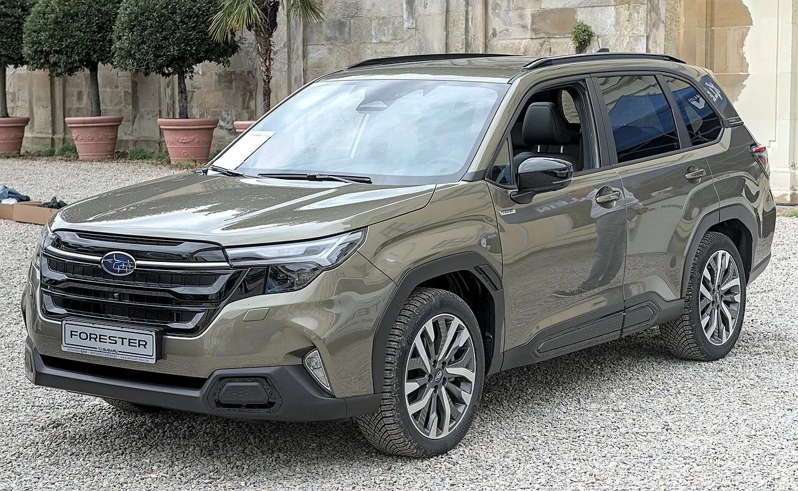
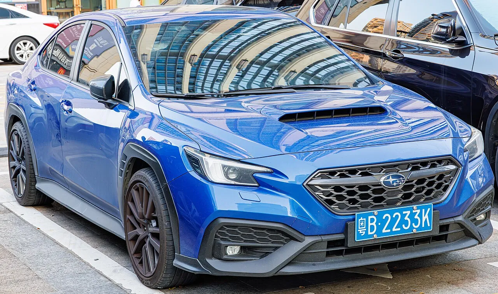
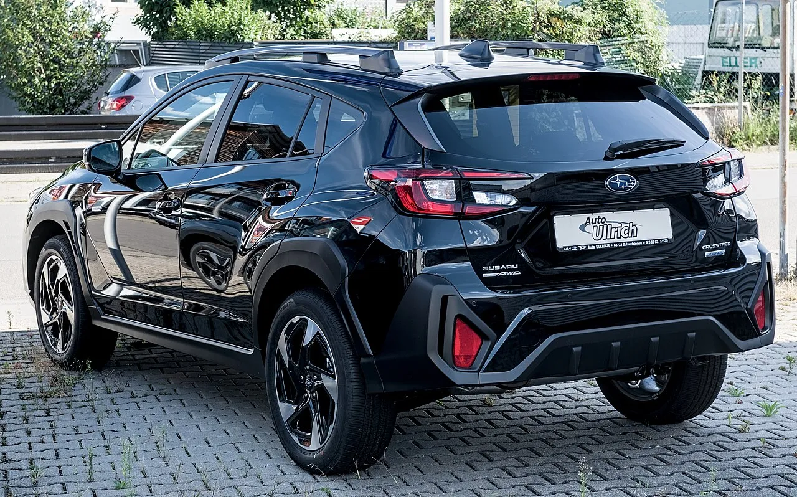
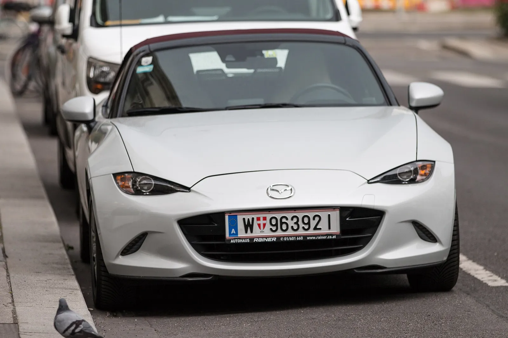
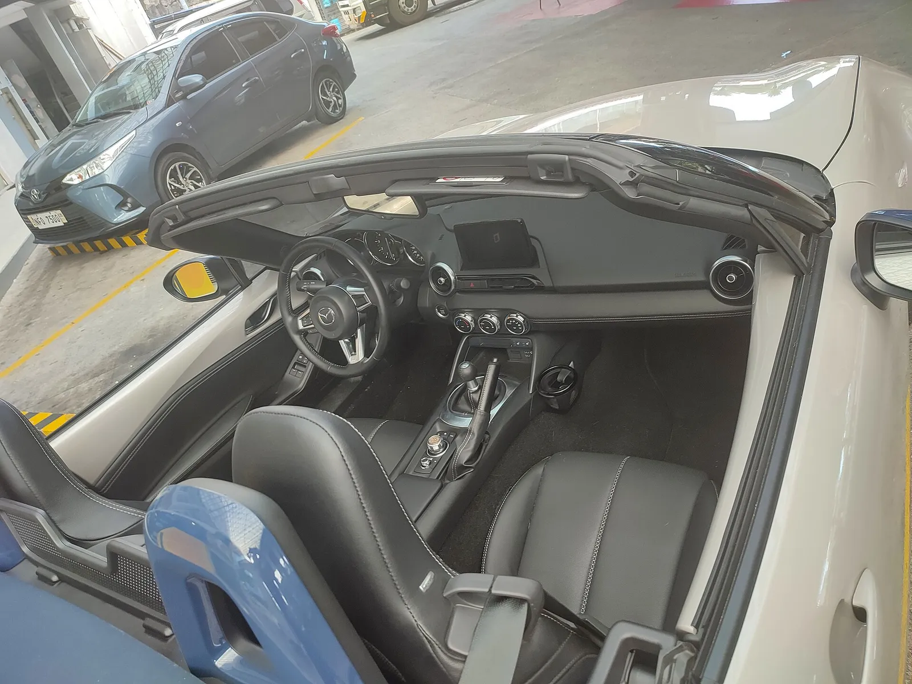
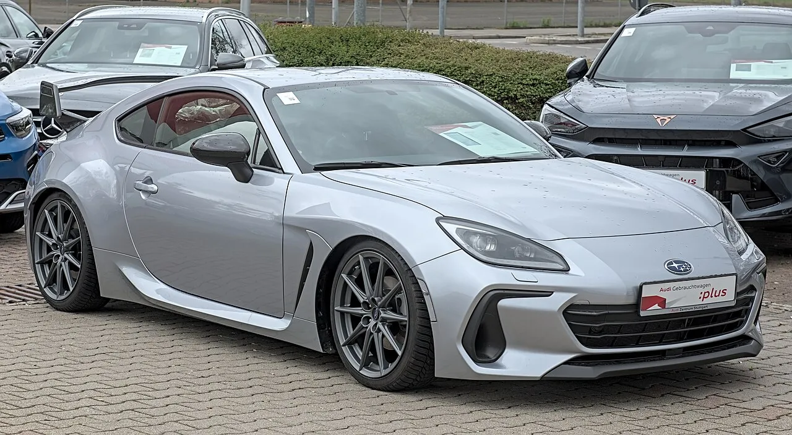
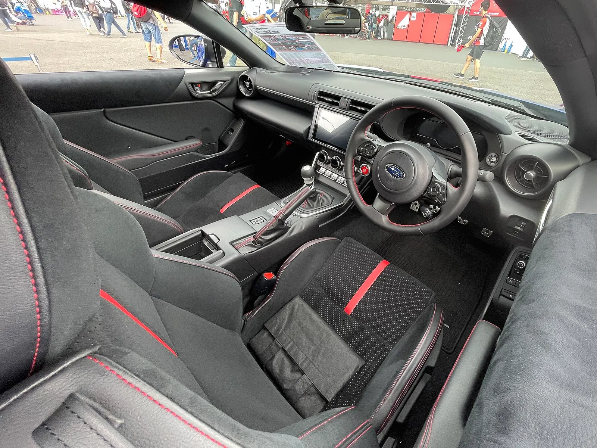
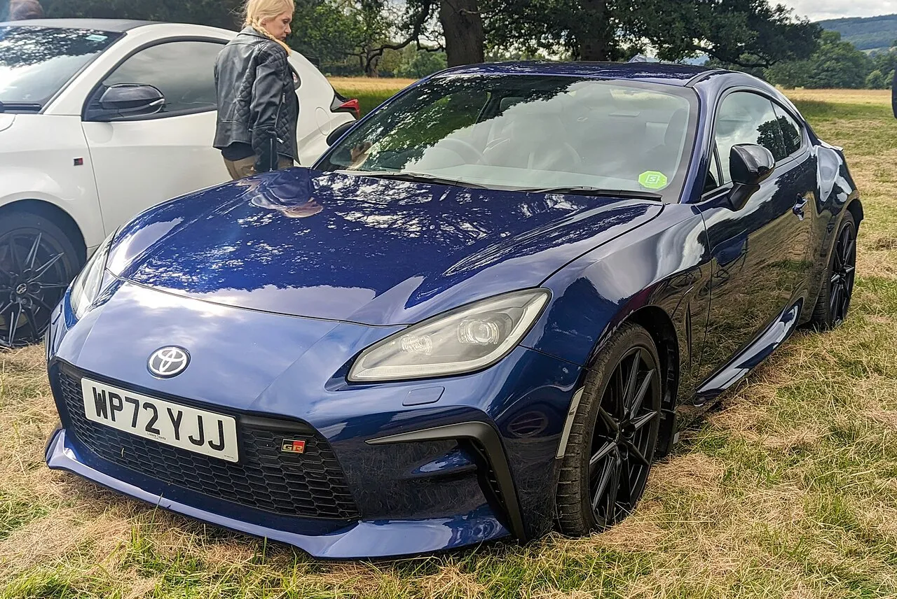
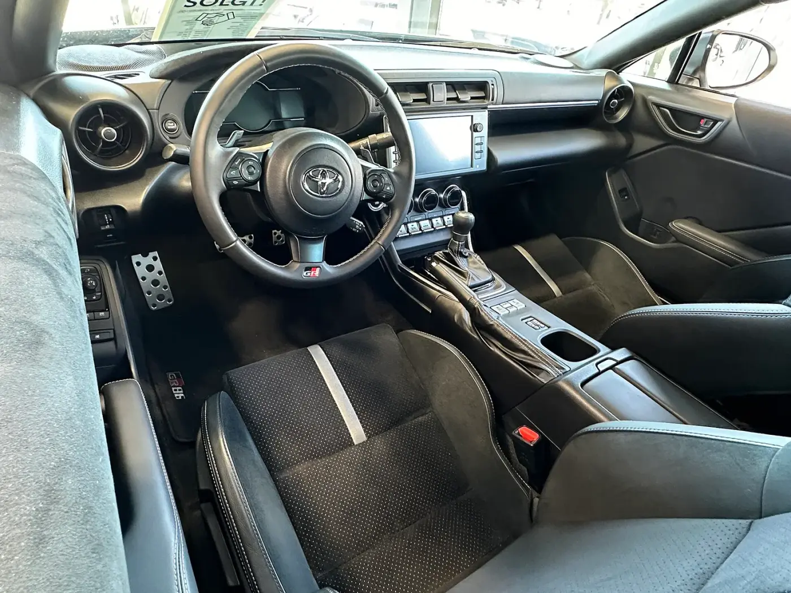

▲ 마쓰다 MX-5 미아타(현행 ND형, 소프트탑 전시차). 2026년 9월 미국에서 689대(+31.5%)가 팔려 BRZ(214대)와 GR86(460대) 합계 674대보다 많았다 ⓒ Alexander-93 (Wikimedia Commons, CC BY-SA 4.0)
"미아타 689대, BRZ와 GR86을 합친 674대보다 많았다." 2026년 9월 미국 신차 시장에서 마쓰다와 스바루가 나란히 좋은 성적표를 받았다. 마쓰다 북미법인(MNAO)은 9월 판매 3만 4,519대(전년 동월 대비 +31.9%)를 발표하면서 보도자료 제목을 '역대 최고의 9월(Best-Ever September)'로 달았고, 스바루 오브 아메리카는 5만 2,056대(+13.2%)와 함께 포레스터의 '역대 최고 9월'을 내세웠다. 이 글은 두 회사의 10월 1일자 보도자료와 토요타 북미법인의 9월 판매 보도자료를 직접 열어 숫자를 맞춘 뒤, CarBuzz가 먼저 짚은 스포츠카 3형제(MX-5 미아타·스바루 BRZ·토요타 GR86) 판매 비교를 중심으로 정리한다. 마쓰다 플래그십 SUV의 부진은 CX-90·CX-70 판매 부진 기사에서 다뤘으니, 이번에는 '기록 경신'과 '스포츠카 숫자'에 집중한다.
1. 두 회사 9월 성적표 한눈에
먼저 두 회사의 9월을 같은 틀에 놓아 본다. 마쓰다는 CX-5와 CX-50이, 스바루는 포레스터·크로스트렉·아웃백이 판매의 대부분을 책임진다. 두 회사 모두 9월은 전년 동월보다 크게 늘었지만, 올해 1~9월 누계는 아직 전년보다 적다는 점이 같다.
| 구분 | 마쓰다(MNAO) | 스바루(SOA) |
|---|---|---|
| 2026년 9월 | 34,519대 | 52,056대 |
| 2025년 9월 | 26,169대 | 46,007대 |
| 전년 동월 대비 | +31.9% | +13.2% |
| 영업일수 보정(DSR) | +26.6% (영업일 25일 vs 24일) | 보도자료에 없음 |
| 1~9월 누계 | 310,268대 (-2.9%) | 475,878대 (-1.5%) |
| 1위 모델(9월) | CX-5 11,345대 | 포레스터 15,989대 |
| 회사가 내세운 기록 | '역대 최고 9월'(보도자료 제목), CX-50·CX-50 하이브리드·CX-90 MHEV 각각 9월 최고 | 포레스터 '역대 최고 9월' |
두 보도자료를 읽을 때 가장 먼저 확인할 점은 '기록'이 어디까지를 가리키는가다. 마쓰다는 제목에서 전체 9월 판매를 '역대 최고'라고 표현했고, 본문 하이라이트에는 CX-50(ICE+하이브리드 합산), CX-50 하이브리드, CX-90 MHEV의 9월 최고 기록을 따로 적었다. 스바루는 회사 전체가 아니라 포레스터 한 차종의 9월 최고 기록을 강조했다. 스바루 전체 9월 판매가 역대 최고인지는 이번 보도자료에서 확인하지 못했다.

▲ 스바루 포레스터(유럽 사양 전시차). 미국 9월 15,989대로 스바루 1위, 9월 기준 역대 최고 기록을 세웠다 ⓒ Alexander Migl (Wikimedia Commons, CC BY-SA 4.0)
2. 마쓰다 — 세단·CX-5가 끌고, CX-30만 누계 -27%
마쓰다의 9월은 한두 모델이 아니라 라인업 대부분이 전년보다 늘어난 달이었다. 모델별 합계는 보도자료의 표로 확인했고, 7개 모델 합산이 총계 34,519대와 정확히 일치한다.
| 모델 | 9월 2026 | 9월 2025 | 전년비 | 1~9월 누계 | 누계 전년비 |
|---|---|---|---|---|---|
| CX-5 | 11,345 | 8,230 | +37.8% | 95,762 | -9.5% |
| CX-50(하이브리드 포함) | 9,147 | 8,876 | +3.1% | 95,351 | +19.7% |
| CX-90 | 4,632 | 3,109 | +49.0% | 34,999 | -21.7% |
| CX-30 | 3,706 | 3,271 | +13.3% | 34,386 | -27.1% |
| 마쓰다3(세단+해치백) | 3,704 | 1,500 | +146.9% | 32,486 | +42.3% |
| CX-70 | 1,296 | 659 | +96.7% | 9,686 | -21.0% |
| MX-5 미아타 | 689 | 524 | +31.5% | 7,598 | +4.1% |
| 합계 | 34,519 | 26,169 | +31.9% | 310,268 | -2.9% |
CX-5는 9월 11,345대로 +37.8%를 기록해 마쓰다 판매 1위를 지켰지만, 누계는 95,762대로 아직 9.5% 적다. 승용(CARS) 판매는 4,393대로 전년(2,024대) 대비 +117.0%였고, 대부분이 마쓰다3다. 세단은 2,794대(+167.9%), 해치백은 910대(+99.1%)였다. 2019년형부터 이어 온 4세대 마쓰다3가 올해 계속 오르는 현상은 앞선 마쓰다 딜레마 기사에서 다룬 흐름의 연장선이다. 한편 대형 SUV CX-90은 9월에 +49.0%로 반등했지만 누계는 -21.7%, CX-70도 9월 +96.7%지만 누계 -21.0%라 '회복'이라고 부르기엔 이르다.
CarBuzz 기사와 공식 수치가 다른 부분이 있다. CarBuzz는 마쓰다 9월 총계를 35,319대, 누계를 310,368대로 적었으나, 보도자료의 총계는 34,519대, 누계 310,268대다. 각 모델 합산도 34,519대로 맞으므로 CarBuzz 수치는 오타일 가능성이 높다(추정). 이 글은 모든 숫자를 보도자료 기준으로 썼다.
보도자료에는 미국 신차 외에 인증 중고차(CPO)와 인접 시장 실적도 함께 실렸다. 신차 기록과 별개로, 같은 달 마쓰다의 북미 흐름이 시장마다 엇갈렸다는 점이 눈에 띈다.
| 구분 | 9월 2026 | 9월 전년비 | 1~9월 누계 |
|---|---|---|---|
| 미국 인증 중고차(CPO) | 6,194대 | +3.7% | 보도자료에서 확인 못 함 |
| 캐나다 | 6,454대 | -19.3% | 56,148대 (-12.3%) |
| 멕시코 | 8,539대 | +15% | 78,654대 (+5%) |
미국이 +31.9%로 뛰는 동안 캐나다는 -19.3%였다. 이 보도자료만으로는 캐나다 부진의 원인을 알 수 없고, 마쓰다도 설명을 붙이지 않았다. 또 마쓰다 보도자료에는 경영진 코멘트가 따로 없다.
마쓰다 9월 보도자료 원문에서 총계·모델별 표·캐나다(6,454대, -19.3%)·멕시코(8,539대, +15%) 실적까지 확인할 수 있다. 마쓰다 보도자료 바로가기
3. 스바루 — 포레스터 +45.9%, WRX는 166% 폭증
스바루의 9월 5만 2,056대는 전년(46,007대)보다 6,049대 많다. 그런데 이 증가분은 '전 차종이 올랐다'가 아니라 포레스터와 WRX, 그리고 새 전기차 두 종이 만든 것이다. 반대로 레거시는 9월 단 2대(전년 1,884대)였다.
| 모델 | 9월 2026 | 9월 2025 | 전년비 | 1~9월 누계 | 누계 전년비 |
|---|---|---|---|---|---|
| 포레스터 | 15,989 | 10,954 | +45.9% | 156,476 | +17.6% |
| 크로스트렉 | 15,296 | 14,321 | +6.8% | 138,249 | -3.1% |
| 아웃백 | 12,651 | 12,406 | +1.9% | 104,759 | -10.0% |
| 어센트 | 3,631 | 3,073 | +18.2% | 32,556 | +3.9% |
| WRX | 1,703 | 640 | +166.1% | 12,027 | +47.8% |
| 임프레자 | 1,343 | 2,109 | -36.3% | 12,739 | -42.4% |
| 트레일시커(EV) | 849 | 0 | 신규 | 5,610 | 신규 |
| 언차티드(EV) | 215 | 0 | 신규 | 3,385 | 신규 |
| BRZ | 214 | 177 | +20.9% | 2,234 | -2.2% |
| 솔테라(EV) | 163 | 443 | -63.2% | 5,635 | -43.5% |
| 레거시 | 2 | 1,884 | -99.9% | 2,208 | -87.1% |
| 합계 | 52,056 | 46,007 | +13.2% | 475,878 | -1.5% |
포레스터는 9월 15,989대로 스바루 1위이자 올해 누계로도 +17.6%(156,476대)다. 크로스트렉은 15,296대로 포레스터와 693대 차이의 2위, 아웃백은 12,651대로 3위였다. CarBuzz는 아웃백 증가율을 +1.1%로 적었으나 보도자료 표는 +1.9%다(공식 수치 사용). 어센트도 CarBuzz의 '약 16%'가 아니라 표에는 +18.2%로 나온다. WRX는 640대에서 1,703대로 늘었고(+166.1%), 스바루는 이를 두고 "애호가용 모델이면서 수동변속기를 고를 수 있는 저렴한 선택지"라는 취지로 설명했다. 스바루는 이와 함께 한정 생산 2027 WRX·BRZ 기념 에디션 공개 사실도 언급했다.
전년 누계와 비교하면 포레스터 효과가 더 선명하다. 포레스터는 1~9월 156,476대로 전년 같은 기간(133,037대)보다 23,439대 늘었다(필자 계산). 반면 크로스트렉은 142,725대에서 138,249대로, 아웃백은 116,413대에서 104,759대로 줄었다. WRX도 누계 8,139대에서 12,027대로 늘었지만 규모 자체는 포레스터의 12분의 1 이하다(필자 계산). 스바루 아메리카의 제프 월터스 사장 겸 COO는 보도자료에서 "소매점들이 스바루가 '자동차 회사 그 이상'임을 계속 증명하고 있다"는 취지로 말하며 안전과 품질을 강조했다. 이 발언에 판매 급증 요인에 대한 구체적 설명은 없어, 포레스터·WRX 호조의 원인은 이번 자료로 단정할 수 없다.

▲ 스바루 WRX(현행 VB형, 중국 번호판 차량). 9월 1,703대로 전년 동월(640대)의 2.7배가 됐다 ⓒ Dinkun Chen (Wikimedia Commons, CC BY-SA 4.0)

▲ 스바루 크로스트렉(유럽 사양 전시차). 9월 15,296대로 포레스터에 이어 2위였다 ⓒ Alexander Migl (Wikimedia Commons, CC BY-SA 4.0)
스바루 9월 보도자료에는 모델별 월·누계 표 전체와 임원 코멘트가 실려 있다. 스바루 보도자료 바로가기
4. 스포츠카 대결 — 미아타 vs BRZ vs GR86
CarBuzz가 "미아타가 BRZ와 GR86을 짓밟았다"고 쓴 근거는 아래 표다. 세 모델 모두 각 제조사 공식 보도자료(마쓰다·스바루·토요타)의 수치다. 토요타 보도자료에서는 GR86(구 FR-S 포함)을 직접 확인했다.
| 모델 | 9월 2026 | 9월 2025 | 9월 전년비 | 1~9월 누계 2026 | 누계 2025 | 누계 전년비 |
|---|---|---|---|---|---|---|
| 마쓰다 MX-5 미아타 | 689 | 524 | +31.5% | 7,598 | 7,299 | +4.1% |
| 토요타 GR86 | 460 | 652 | -29.4% | 5,642 | 8,107 | -30.4% |
| 스바루 BRZ | 214 | 177 | +20.9% | 2,234 | 2,284 | -2.2% |
| BRZ+GR86 합계(필자 계산) | 674 | 829 | -18.7% | 7,876 | 10,391 | -24.2% |
| 세 모델 합계(필자 계산) | 1,363 | 1,353 | +0.7% | 15,474 | 17,690 | -12.5% |
숫자가 말하는 것은 세 가지다. 첫째, 9월 한 달만 보면 미아타가 압도적이다. 689대는 GR86(460대)의 1.5배, BRZ(214대)의 3.2배이고, 두 쌍둥이 합계(674대)도 15대 앞선다. 보도자료는 'MX-5' 407대(+26.8%)와 'MXR' 282대(+38.9%)를 따로 적었고 둘 다 늘었다(CarBuzz는 이를 컨버터블과 RF로 풀었지만 보도자료에는 별도 설명이 없다). 둘째, 누계는 쌍둥이가 앞선다. BRZ+GR86 합계 7,876대가 미아타 7,598대보다 278대 많다. 같은 플랫폼의 두 차를 하나로 묶는 것이 공정하냐는 논쟁은 있겠지만, 최소한 연간 흐름에서는 '미아타 압승'이 성립하지 않는다. 셋째, 쌍둥이의 하락은 GR86이 이끈다. BRZ는 누계 -2.2%로 거의 유지됐고, GR86이 -30.4%(8,107대→5,642대)로 크게 빠졌다.

▲ 마쓰다 MX-5(현행 ND형, 오스트리아 번호판 차량). 9월 689대, 누계 7,598대(+4.1%)를 기록했다 ⓒ Johannes Maximilian (Wikimedia Commons, CC BY-SA 4.0)

▲ MX-5 ND형 실내. 운전석 중심의 2인승 구조에 수동변속기 레버가 놓여 있다 ⓒ Ethan Llamas (Wikimedia Commons, CC BY 4.0)

▲ 스바루 BRZ(2세대 ZD8형). 9월 214대(+20.9%)로 증가했지만 누계는 2,234대(-2.2%)다 ⓒ Alexander Migl (Wikimedia Commons, CC BY-SA 4.0)

▲ 스바루 BRZ(ZD8형) 실내. 일본 시장 STI 퍼포먼스 부품 장착 차량으로 미국 사양과 다를 수 있다 ⓒ Tokumeigakarinoaoshima (Wikimedia Commons, CC BY-SA 4.0)

▲ 토요타 GR86(영국 번호판 차량). 9월 460대로 전년(652대)보다 29.4% 줄었고 누계는 5,642대(-30.4%)다 ⓒ Calreyn88 (Wikimedia Commons, CC BY-SA 4.0)

▲ 토요타 GR86 실내. 쌍둥이 BRZ와 계기판·센터콘솔 구성이 비슷한 2도어 쿠페다 ⓒ Ssu (Wikimedia Commons, CC BY-SA 4.0)
참고로 같은 달 토요타 GR 라인의 또 다른 스포츠카 GR 수프라는 21대(전년 221대, -90.5%)에 그쳤고 누계는 2,437대(+21.3%)였다. 스포츠카 판매가 1,000대 안팎인 시장에서 스바루가 WRX 1,703대로 미아타 689대의 2.5배를 판 점도 눈에 띈다. 4도어 세단이라는 실용성에 수동변속기 선택지가 겹친 결과로 보이지만, 스바루는 판매 이유를 공식 데이터로 풀어 설명하지 않았다(해석은 추정). 혼다 프렐류드와 BRZ의 대결은 프렐류드가 BRZ를 이긴 방식에서 다뤘다.
토요타 북미법인 9월·3분기 판매 보도자료에서 GR86·수프라 등 전 차종 월·누계 표를 확인할 수 있다. 토요타 보도자료 바로가기
5. 숫자 읽을 때 주의할 점
✔ 이 표들을 해석할 때
- 영업일수: 2026년 9월은 영업일 25일, 2025년 9월은 24일이다. 마쓰다 +31.9%는 DSR로 +26.6%, 토요타 GR86은 볼륨 -29.4%에서 DSR -32.3%가 된다. 스바루·BRZ는 DSR이 보도자료에 없다.
- CarBuzz 인용 수치: GR86 -29.4%는 토요타 표의 볼륨 기준 수치이며 CarBuzz도 같은 값을 인용했다(DSR 기준은 -32.3%). 마쓰다 총계 35,319대는 공식 34,519대와 달라 공식 수치를 썼다.
- 3분기 합계: 마쓰다·스바루 보도자료에는 3분기(7~9월) 합계가 없다. 7·8월 수치를 더해 직접 구하지 않았으므로 3분기 기록 여부는 확인 못 함이다. 토요타만 3분기 합계를 별도로 발표했다.
- 판매 기준: 이 수치는 각 사가 발표한 미국 판매 실적이며, 집계 방식(소매·출하 등)은 보도자료가 따로 정의하지 않아 확인 못 함이다.
- '기록'의 범위: 마쓰다는 '9월 기준 역대 최고', 스바루는 '포레스터의 9월 기준 역대 최고'다. 연간·월 전체 최고 기록이 아니다.
6. 한국 독자가 챙길 포인트
이 숫자는 미국 시장 판매다. 한국 판매와 직접 비교할 수는 없고, 마쓰다·스바루의 국내 판매 현황이나 신형 CX-5의 국내 출시 일정은 이번 조사에서 확인하지 못했다. 그래서 한국 시장과 직접 연결하기보다 이미 다룬 관련 기사로 맥락을 이어 본다. CX-5는 미국에서 9월 1만 1천 대를 넘겨 팔렸고(세대별 구분은 보도자료에 없다), 신형 CX-5의 주행 성능 논란은 신형 CX-5 무스 테스트 기사에서 다뤘다. 미아타의 신뢰도 조사는 미아타 신뢰도 1위 기사, WRX 계열의 수동변속기 라인업은 WRX vs 엘란트라 N 수동 비교에서 확인할 수 있다.
숫자가 던지는 시사점은 두 가지다. 하나는 소량 판매 스포츠카도 월 단위로는 변동이 크다는 점이다. 미아타 689대와 BRZ 214대는 한 달 사이 수십~백여 대 차이로 증감률이 크게 달라진다. 다른 하나는 SUV·세단이 이끄는 일본 브랜드의 '기록'과 스포츠카 판매는 다른 이야기라는 점이다. 마쓰다 9월 증가분 8,350대 가운데 미아타가 차지한 몫은 165대(약 2%)다(필자 계산). 스바루도 사정이 비슷해, 9월 증가분 6,049대 중 BRZ의 몫은 37대(약 0.6%)에 불과하다(필자 계산). 국내에서 이 브랜드들을 볼 때도 '스포츠카 이미지'와 '실제 판매를 떠받치는 SUV'는 구분해서 읽을 필요가 있다.
7. 요약
마쓰다는 9월 미국에서 34,519대(+31.9%)를 팔아 보도자료 제목을 '역대 최고 9월'로 달았고, 스바루는 52,056대(+13.2%)에 포레스터 15,989대(+45.9%, 9월 기준 최고)를 기록했다. 두 회사 모두 올해 1~9월 누계는 아직 전년보다 적다(마쓰다 -2.9%, 스바루 -1.5%).
스포츠카에서는 9월에 미아타 689대가 BRZ 214대+GR86 460대(674대)를 앞섰지만, 1~9월 누계는 BRZ+GR86 7,876대가 미아타 7,598대보다 많다. GR86만 9월 -29.4%, 누계 -30.4%로 크게 줄었고, WRX는 9월 1,703대로 +166.1%였다.
CarBuzz가 적은 마쓰다 총계 35,319대는 공식 34,519대와 다르며, 마쓰다·스바루의 3분기 합계와 한국 시장 판매 현황은 확인하지 못했다.